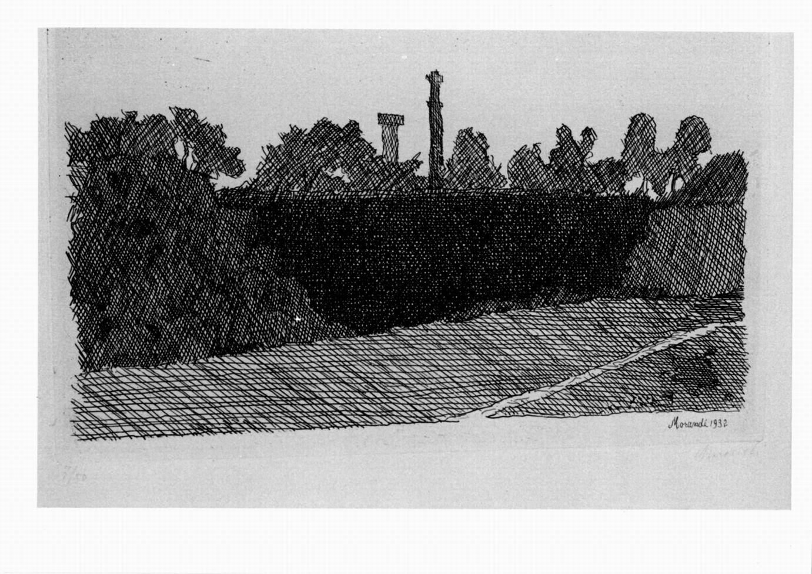

Stage 3

veduta della Montagnola di Bologna, scorcio di giardino
Initial Query to the Knowledge Graph
We began with retrieving new information about "veduta della Montagnola di Bologna, scorcio di giardino" and decided to use the following SPARQL query:
PREFIX cis: <https://w3id.org/arco/resource/HistoricOrArtisticProperty/> DESCRIBE cis:0800057203 |
Purpose This SPARQL DESCRIBE query aims to retrieve a detailed description of a specific resource within a dataset. In this case, the resource is a historic or artistic property identified by the URI cis:0800057203. The query seeks to discover all the information available about the historic or artistic property with the given identifier. |
Using a Large Language Model to Enrich Metadata
For this comparison, we will employ two models: ChatGPT and Gemini.
Cultural Property: veduta della Montagnola di Bologna, scorcio di giardino (stampa)
Author: Morandi Giorgio
Q: What does this cultural property represent? (Zero-shot Prompting)
| ChatGPT | Gemini |
|---|---|
| The cultural property "Veduta della Montagnola di Bologna, scorcio di giardino" (View of the Montagnola of Bologna, glimpse of a garden) is a print by the Italian artist Giorgio Morandi. Morandi is renowned for his contemplative and detailed depictions of still lifes and landscapes. This particular print captures a view of the Montagnola Park in Bologna, Italy.
Representation of the Cultural Property
|
The cultural property "veduta della Montagnola di Bologna, scorcio di giardino (stampa)" is an etching by the Italian artist Giorgio Morandi, created in 1932. It depicts a view of the Montagnola, a public park in Bologna, Italy, with a glimpse of a garden. The print is characterized by Morandi's signature style of muted tones and geometric forms, conveying a sense of tranquility and introspection.
Here's a more detailed description of the cultural property:
|
Can you extract exact cultural entities from this description? Give me a result as a list. Few-shot prompting
| ChatGPT | Gemini |
|---|---|
|
• "Veduta della Montagnola di Bologna, scorcio di giardino" by Giorgio Morandi • Montagnola Park in Bologna • Giorgio Morandi |
• veduta della Montagnola di Bologna, scorcio di giardino (print) by Giorgio Morandi • Montagnola (park) • Bologna, Italy |